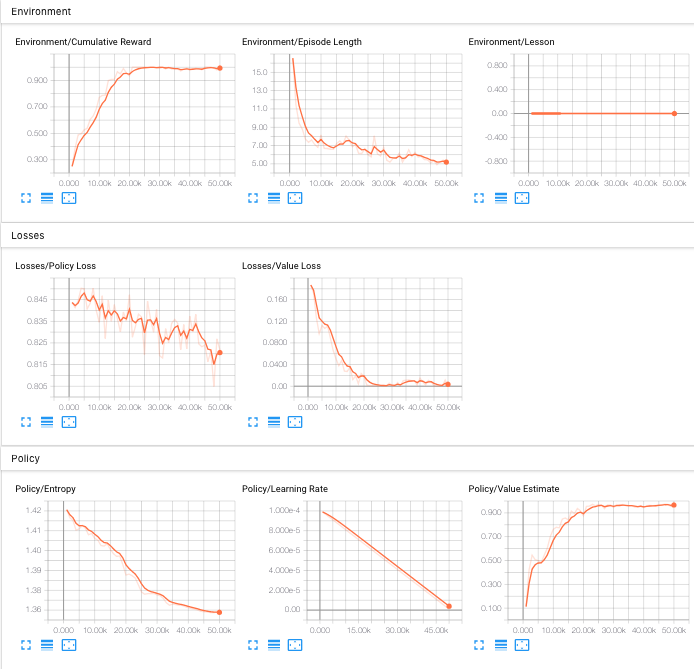

Making a New Learning Environment
This tutorial walks through the process of creating a Unity Environment from scratch. We recommend first reading the Getting Started guide to understand the concepts presented here first in an already-built environment.

In this example, we will create an agent capable of controlling a ball on a platform. We will then train the agent to roll the ball toward the cube while avoiding falling off the platform.
Overview
Using the ML-Agents Toolkit in a Unity project involves the following basic steps:
- Create an environment for your agents to live in. An environment can range from a simple physical simulation containing a few objects to an entire game or ecosystem.
- Implement your Agent subclasses. An Agent subclass defines the code an Agent uses to observe its environment, to carry out assigned actions, and to calculate the rewards used for reinforcement training. You can also implement optional methods to reset the Agent when it has finished or failed its task.
- Add your Agent subclasses to appropriate GameObjects, typically, the object in the scene that represents the Agent in the simulation.
Note: If you are unfamiliar with Unity, refer to the Unity manual if an Editor task isn't explained sufficiently in this tutorial.
If you haven't already, follow the installation instructions.
Set Up the Unity Project
The first task to accomplish is simply creating a new Unity project and importing the ML-Agents assets into it:
- Launch Unity Hub and create a new 3D project named "RollerBall".
- Add the ML-Agents Unity package to your project.
Your Unity Project window should contain the following assets:

Create the Environment
Next, we will create a very simple scene to act as our learning environment. The "physical" components of the environment include a Plane to act as the floor for the Agent to move around on, a Cube to act as the goal or target for the agent to seek, and a Sphere to represent the Agent itself.
Create the Floor Plane
- Right click in Hierarchy window, select 3D Object > Plane.
- Name the GameObject "Floor".
- Select the Floor Plane to view its properties in the Inspector window.
- Set Transform to Position =
(0, 0, 0), Rotation =(0, 0, 0), Scale =(1, 1, 1).

Add the Target Cube
- Right click in Hierarchy window, select 3D Object > Cube.
- Name the GameObject "Target".
- Select the Target Cube to view its properties in the Inspector window.
- Set Transform to Position =
(3, 0.5, 3), Rotation =(0, 0, 0), Scale =(1, 1, 1).

Add the Agent Sphere
- Right click in Hierarchy window, select 3D Object > Sphere.
- Name the GameObject "RollerAgent".
- Select the RollerAgent Sphere to view its properties in the Inspector window.
- Set Transform to Position =
(0, 0.5, 0), Rotation =(0, 0, 0), Scale =(1, 1, 1). - Click Add Component.
- Add the
Rigidbodycomponent to the Sphere.
Group into Training Area
Group the floor, target and agent under a single, empty, GameObject. This will simplify some of our subsequent steps.
To do so:
- Right-click on your Project Hierarchy and create a new empty GameObject. Name it TrainingArea.
- Reset the TrainingArea’s Transform so that it is at
(0,0,0)with Rotation(0,0,0)and Scale(1,1,1). - Drag the Floor, Target, and RollerAgent GameObjects in the Hierarchy into the TrainingArea GameObject.

Implement an Agent
To create the Agent Script:
- Select the RollerAgent GameObject to view it in the Inspector window.
- Click Add Component.
- Click New Script in the list of components (at the bottom).
- Name the script "RollerAgent".
- Click Create and Add.
Then, edit the new RollerAgent script:
- In the Unity Project window, double-click the
RollerAgentscript to open it in your code editor. - Import ML-Agent package by adding
csharp
using Unity.MLAgents;
using Unity.MLAgents.Sensors;
using Unity.MLAgents.Actuators;
then change the base class from MonoBehaviour to Agent.
1. Delete Update() since we are not using it, but keep Start().
So far, these are the basic steps that you would use to add ML-Agents to any
Unity project. Next, we will add the logic that will let our Agent learn to roll
to the cube using reinforcement learning. More specifically, we will need to
extend three methods from the Agent base class:
OnEpisodeBegin()CollectObservations(VectorSensor sensor)OnActionReceived(ActionBuffers actionBuffers)
We overview each of these in more detail in the dedicated subsections below.
Initialization and Resetting the Agent
The process of training in the ML-Agents Toolkit involves running episodes where
the Agent (Sphere) attempts to solve the task. Each episode lasts until the
Agents solves the task (i.e. reaches the cube), fails (rolls off the platform)
or times out (takes too long to solve or fail at the task). At the start of each
episode, OnEpisodeBegin() is called to set-up the environment for a
new episode. Typically the scene is initialized in a random manner to enable the
agent to learn to solve the task under a variety of conditions.
In this example, each time the Agent (Sphere) reaches its target (Cube), the
episode ends and the target (Cube) is moved to a new random location; and if
the Agent rolls off the platform, it will be put back onto the floor.
These are all handled in OnEpisodeBegin().
To move the target (Cube), we need a reference to its Transform (which stores a
GameObject's position, orientation and scale in the 3D world). To get this
reference, add a public field of type Transform to the RollerAgent class.
Public fields of a component in Unity get displayed in the Inspector window,
allowing you to choose which GameObject to use as the target in the Unity
Editor.
To reset the Agent's velocity (and later to apply force to move the agent) we
need a reference to the Rigidbody component. A
Rigidbody is Unity's
primary element for physics simulation. (See
Physics for full
documentation of Unity physics.) Since the Rigidbody component is on the same
GameObject as our Agent script, the best way to get this reference is using
GameObject.GetComponent<T>(), which we can call in our script's Start()
method.
So far, our RollerAgent script looks like:
using System.Collections.Generic;
using UnityEngine;
using Unity.MLAgents;
using Unity.MLAgents.Sensors;
public class RollerAgent : Agent
{
Rigidbody rBody;
void Start () {
rBody = GetComponent<Rigidbody>();
}
public Transform Target;
public override void OnEpisodeBegin()
{
// If the Agent fell, zero its momentum
if (this.transform.localPosition.y < 0)
{
this.rBody.angularVelocity = Vector3.zero;
this.rBody.velocity = Vector3.zero;
this.transform.localPosition = new Vector3( 0, 0.5f, 0);
}
// Move the target to a new spot
Target.localPosition = new Vector3(Random.value * 8 - 4,
0.5f,
Random.value * 8 - 4);
}
}
Next, let's implement the Agent.CollectObservations(VectorSensor sensor)
method.
Observing the Environment
The Agent sends the information we collect to the Brain, which uses it to make a decision. When you train the Agent (or use a trained model), the data is fed into a neural network as a feature vector. For an Agent to successfully learn a task, we need to provide the correct information. A good rule of thumb for deciding what information to collect is to consider what you would need to calculate an analytical solution to the problem.
In our case, the information our Agent collects includes the position of the target, the position of the agent itself, and the velocity of the agent. This helps the Agent learn to control its speed so it doesn't overshoot the target and roll off the platform. In total, the agent observation contains 8 values as implemented below:
public override void CollectObservations(VectorSensor sensor)
{
// Target and Agent positions
sensor.AddObservation(Target.localPosition);
sensor.AddObservation(this.transform.localPosition);
// Agent velocity
sensor.AddObservation(rBody.velocity.x);
sensor.AddObservation(rBody.velocity.z);
}
Taking Actions and Assigning Rewards
The final part of the Agent code is the Agent.OnActionReceived() method, which
receives actions and assigns the reward.
Actions
To solve the task of moving towards the target, the Agent (Sphere) needs to be
able to move in the x and z directions. As such, the agent needs 2 actions:
the first determines the force applied along the x-axis; and the
second determines the force applied along the z-axis. (If we allowed the Agent
to move in three dimensions, then we would need a third action.)
The RollerAgent applies the values from the action[] array to its Rigidbody
component rBody, using Rigidbody.AddForce():
Vector3 controlSignal = Vector3.zero;
controlSignal.x = action[0];
controlSignal.z = action[1];
rBody.AddForce(controlSignal * forceMultiplier);
Rewards
Reinforcement learning requires rewards to signal which decisions are good and which are bad. The learning algorithm uses the rewards to determine whether it is giving the Agent the optimal actions. You want to reward an Agent for completing the assigned task. In this case, the Agent is given a reward of 1.0 for reaching the Target cube.
Rewards are assigned in OnActionReceived(). The RollerAgent
calculates the distance to detect when it reaches the target.
When it does, the code calls Agent.SetReward() to assign a reward
of 1.0 and marks the agent as finished by calling EndEpisode() on
the Agent.
float distanceToTarget = Vector3.Distance(this.transform.localPosition, Target.localPosition);
// Reached target
if (distanceToTarget < 1.42f)
{
SetReward(1.0f);
EndEpisode();
}
Finally, if the Agent falls off the platform, end the episode so that it can reset itself:
// Fell off platform
if (this.transform.localPosition.y < 0)
{
EndEpisode();
}
OnActionReceived()
With the action and reward logic outlined above, the final version of
OnActionReceived() looks like:
public float forceMultiplier = 10;
public override void OnActionReceived(ActionBuffers actionBuffers)
{
// Actions, size = 2
Vector3 controlSignal = Vector3.zero;
controlSignal.x = actionBuffers.ContinuousActions[0];
controlSignal.z = actionBuffers.ContinuousActions[1];
rBody.AddForce(controlSignal * forceMultiplier);
// Rewards
float distanceToTarget = Vector3.Distance(this.transform.localPosition, Target.localPosition);
// Reached target
if (distanceToTarget < 1.42f)
{
SetReward(1.0f);
EndEpisode();
}
// Fell off platform
else if (this.transform.localPosition.y < 0)
{
EndEpisode();
}
}
Note the forceMultiplier class variable is defined before the method definition.
Since forceMultiplier is public, you can set the value from the Inspector window.
Final Agent Setup in Editor
Now that all the GameObjects and ML-Agent components are in place, it is time to connect everything together in the Unity Editor. This involves adding and setting some of the Agent Component's properties so that they are compatible with our Agent script.
- Select the RollerAgent GameObject to show its properties in the Inspector window.
- Drag the Target GameObject in the Hierarchy into the
Targetfield in RollerAgent Script. - Add a
Decision Requesterscript with the Add Component button. Set the Decision Period to10. For more information on decisions, see the Agent documentation - Add a
Behavior Parametersscript with the Add Component button. Set the Behavior Parameters of the Agent to the following: Behavior Name: RollerBallVector Observation>Space Size= 8Actions>Continuous Actions= 2
In the inspector, the RollerAgent should look like this now:

Now you are ready to test the environment before training.
Testing the Environment
It is always a good idea to first test your environment by controlling the Agent
using the keyboard. To do so, you will need to extend the Heuristic() method
in the RollerAgent class. For our example, the heuristic will generate an
action corresponding to the values of the "Horizontal" and "Vertical" input axis
(which correspond to the keyboard arrow keys):
public override void Heuristic(in ActionBuffers actionsOut)
{
var continuousActionsOut = actionsOut.ContinuousActions;
continuousActionsOut[0] = Input.GetAxis("Horizontal");
continuousActionsOut[1] = Input.GetAxis("Vertical");
}
In order for the Agent to use the Heuristic, You will need to set the
Behavior Type to Heuristic Only in the Behavior Parameters of the
RollerAgent.
Press Play to run the scene and use the arrows keys to move the Agent around the platform. Make sure that there are no errors displayed in the Unity Editor Console window and that the Agent resets when it reaches its target or falls from the platform.
Training the Environment
The process is the same as described in the Getting Started Guide.
The hyperparameters for training are specified in a configuration file that you
pass to the mlagents-learn program. Create a new rollerball_config.yaml file
under config/ and include the following hyperparameter values:
behaviors:
RollerBall:
trainer_type: ppo
hyperparameters:
batch_size: 10
buffer_size: 100
learning_rate: 3.0e-4
beta: 5.0e-4
epsilon: 0.2
lambd: 0.99
num_epoch: 3
learning_rate_schedule: linear
beta_schedule: constant
epsilon_schedule: linear
network_settings:
normalize: false
hidden_units: 128
num_layers: 2
reward_signals:
extrinsic:
gamma: 0.99
strength: 1.0
max_steps: 500000
time_horizon: 64
summary_freq: 10000
Hyperparameters are explained in the training configuration file documentation
Since this example creates a very simple training environment with only a few inputs and outputs, using small batch and buffer sizes speeds up the training considerably. However, if you add more complexity to the environment or change the reward or observation functions, you might also find that training performs better with different hyperparameter values. In addition to setting these hyperparameter values, the Agent DecisionFrequency parameter has a large effect on training time and success. A larger value reduces the number of decisions the training algorithm has to consider and, in this simple environment, speeds up training.
To train your agent, run the following command before pressing Play in the Editor:
mlagents-learn config/rollerball_config.yaml --run-id=RollerBall
To monitor the statistics of Agent performance during training, use TensorBoard.

In particular, the cumulative_reward and value_estimate statistics show how well the Agent is achieving the task. In this example, the maximum reward an Agent can earn is 1.0, so these statistics approach that value when the Agent has successfully solved the problem.
Optional: Multiple Training Areas within the Same Scene
In many of the example environments, many
copies of the training area are instantiated in the scene. This generally speeds
up training, allowing the environment to gather many experiences in parallel.
This can be achieved simply by instantiating many Agents with the same
Behavior Name. Note that we've already simplified our transition to using
multiple areas by creating the TrainingArea GameObject and relying on local
positions in RollerAgent.cs. Use the following steps to parallelize your
RollerBall environment:
- Drag the TrainingArea GameObject, along with its attached GameObjects, into your Assets browser, turning it into a prefab.
- You can now instantiate copies of the TrainingArea prefab. Drag them into your scene, positioning them so that they do not overlap.
Alternatively, you can use the TrainingAreaReplicator to replicate training areas. Use the following steps:
- Create a new empty Game Object in the scene.
- Click on the new object and add a TrainingAreaReplicator component to the empty Game Object through the inspector.
- Drag the training area to
Base Areain the Training Area Replicator. - Specify the number of areas to replicate and the separation between areas.
- Hit play and the areas will be replicated automatically!
Optional: Training Using Concurrent Unity Instances
Another level of parallelization comes by training using concurrent Unity instances. For example,
mlagents-learn config/rollerball_config.yaml --run-id=RollerBall --num-envs=2
will start ML Agents training with two environment instances. Combining multiple
training areas within the same scene, with concurrent Unity instances, effectively
gives you two levels of parallelism to speed up training. The command line option
--num-envs=<n> controls the number of concurrent Unity instances that are
executed in parallel during training.